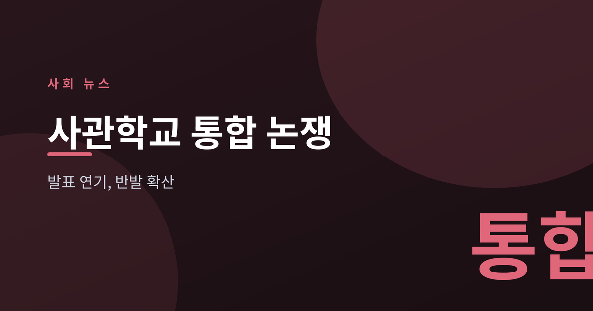
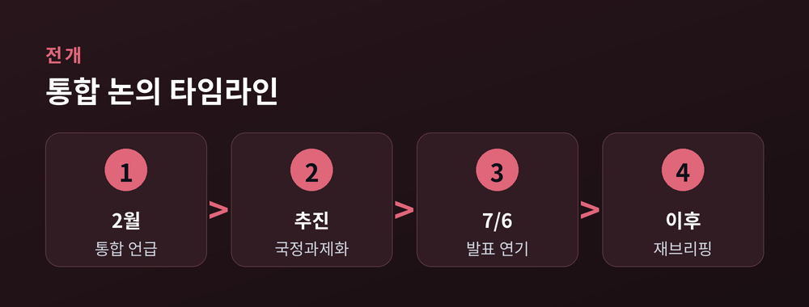
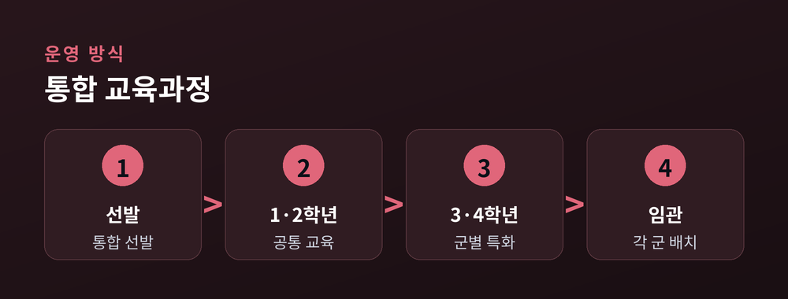
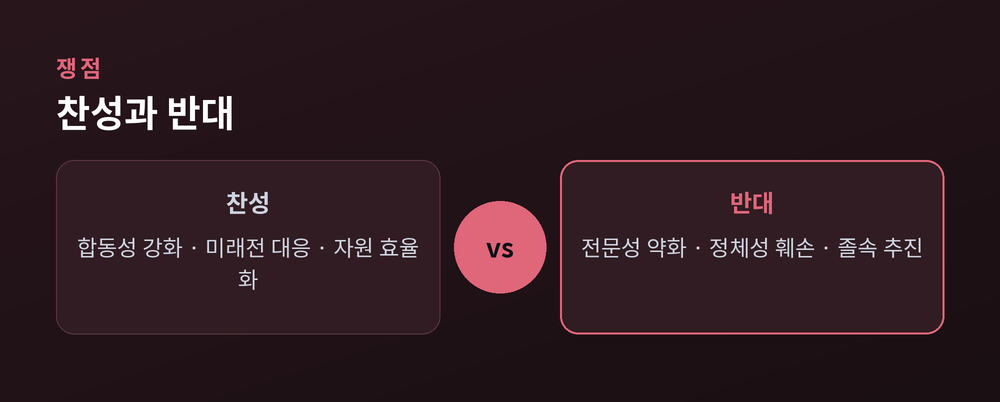

발표는 미뤄지고 반발은 커지고

국방부는 2026년 7월 6일 육·해·공군 사관학교를 하나로 묶는 '국군사관학교' 창설 기본계획을 발표할 예정이었으나, 브리핑을 앞두고 돌연 연기했습니다.
국방부는 안규백 장관이 대통령 주재 회의에 배석하게 돼 일정이 순연됐다고 설명했으며, 장관의 해외 순방 이후 다시 브리핑을 추진할 계획이라고 밝혔습니다. 이 구상은 이재명 대통령이 지난 2월 통합임관식에서 언급한 뒤 국정과제로 떠오른 사안입니다. (세계일보·아주경제 보도)


국방부 구상은 통합 선발 후 1·2학년은 공통 교육, 3·4학년은 군을 정해 각 군 특화 교육을 받는 2단계 체계입니다.
안규백 장관은 "각 군의 전문성이 칸막이가 돼서는 안 된다"며 합동성을 체질화해야 한다고 강조했습니다. 정부는 드론·AI가 주도하는 미래 전장에서 '전 영역 작전' 능력을 갖추려면 통합 교육이 필요하다는 입장입니다. 인구 감소와 지원자 감소, 필기 성적 하락도 배경으로 거론됩니다. (한국일보·경향신문 보도)

찬성 측은 합동성 강화와 효율을, 반대 측은 각 군 정체성과 전문성 약화를 앞세워 맞서고 있습니다.
찬성 논리는 미래전에 대응할 통합 인재 양성과 자원 효율화입니다. 반면 육·해·공사 총동창회는 이례적으로 공동 전선을 꾸려 "졸속 통합"이라 반발하며, 7월 8일 국회 앞 총궐기대회를 예고했습니다. 역대 육사 교장들은 "미국·영국·프랑스 등 대부분 국가가 독립된 사관학교 체계를 유지한다"며 진정한 합동성은 각 군의 고유 정체성 위에서 완성된다고 주장했습니다.
"합동성은 강화가 아니라 체질화해야 한다" — 안규백 국방부 장관 (한국일보)
발표 시점과 추진 속도, 그리고 각 군 반발의 강도가 향후 방향을 좌우할 전망입니다.
정부는 "골든타임을 놓치면 안 된다"며 속도전 의지를 보이지만, 원로·동문회의 집단행동과 '소통 부족' 지적이 부담으로 작용하고 있습니다. 국방부가 정책 설명회 등으로 반대 여론을 어느 정도 흡수하느냐가 관건입니다. 통합 방식의 세부안, 서울 육사 이전·태릉 개발 같은 부수 쟁점도 함께 지켜볼 필요가 있습니다. (파이낸셜뉴스·문화일보 보도)